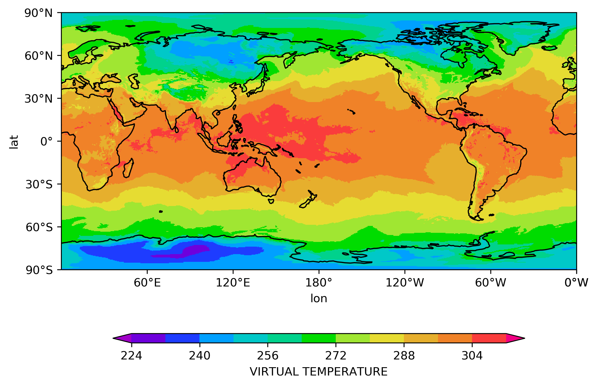
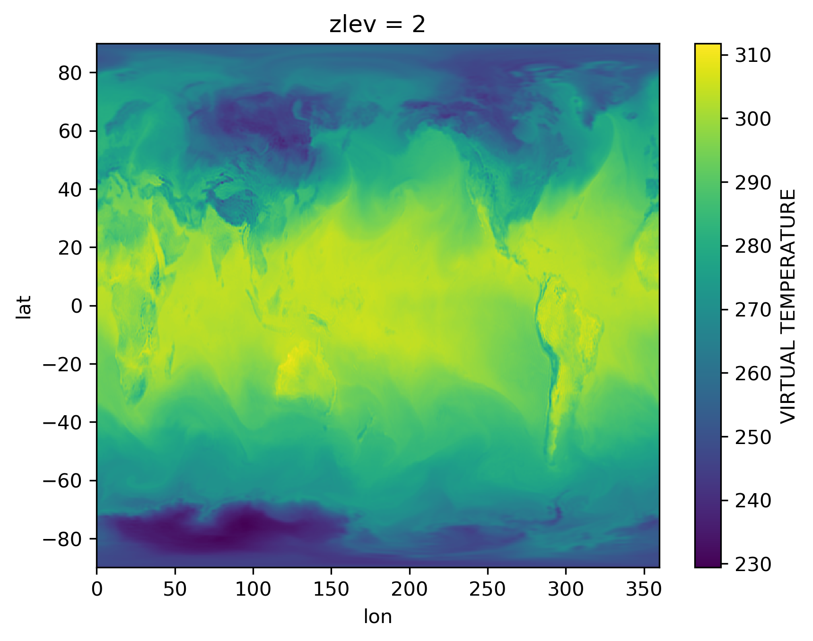
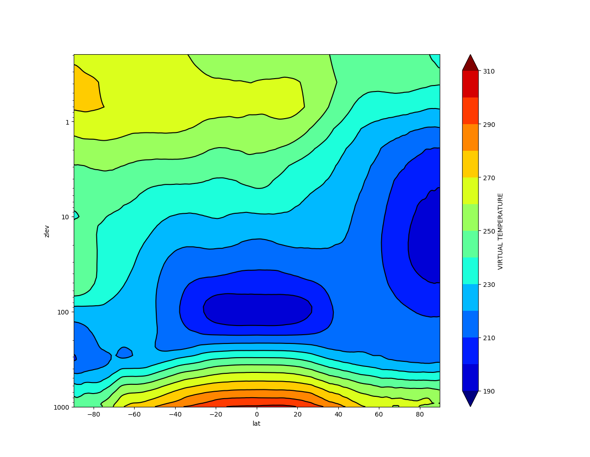

Uso
Nos passos anteriores foi apresentada a forma de obtenção e instalação das dependências e o pacote pyBAM. A seguir será demostrado o uso básico do pacote.
O primeiro passo é carregar o pacote no ambiente Python. Uma vez que o ambiente Python já esteja em execução basta importar o pacote:
1 | |
Para a visualização de figuras é necessário carregar o pacote matplotlib:
1 | |
O pacote pyBAM lida diretamente com os arquivos espectrais gerados pelo modelo BAM. As variáveis no espaço espectral são recompostas para o espaço físico (ponto de grade) e são organizadas em estruturas de dados em 2 ou 3 dimensões utilizando a biblioteca xarray do Python.
Para acessar um arquivo do BAM basta informar o arquivo header correspondente. Por exemplo um arquivo de previsão é acessado informando o arquivo dir, a previsão de 0 horas (condição inicial) é acessada por meio do arquivo dic, já a condição inicial inicializada é acessada pelo arquivo din. No caso da condição inicial que é lida pelo modelo BAM pode ser acessada criando-se um arquivo header, semelhante aos arquivos de previsão, porém com o nome dun, por exemplo, GANL2021021500.dun.TQ0299L064. Então para acessar qualquer um destes arquivos é realizada a seguinte operação no ambiente Python (aqui será demonstrado com um arquivo de análise icn):
1 | |
Para plotar uma variável em um determinado nível é realizada a seguinte operação:
1 | |
Obs.: se a opção zlevel for omitida será plotado o primeiro nível da variável.
Como resultado teremos o seguinte mapa:

É possível obter campos 2D ou 3D para serem manipulados diretamente no Python, por exemplo, um campo 2D é obtido da seguinte forma:
1 | |
Desta forma a variável field conterá um xarray com a temperatura virtual no nível 55:
1 2 | |
1 2 3 4 5 6 7 8 9 10 11 12 13 14 15 16 17 18 | |
Por outro lado, para obter campos 3D utiliza-se o método getField3D. Pelo fato dos arquivos estarem no espaço espectral é necessária a conversão para o espaço físico, e este processo leva um pouco de tempo e depende da máquina onde está sendo executado:
1 2 3 4 5 | |
1 2 3 4 5 6 7 8 9 10 11 12 13 14 15 16 17 18 19 20 21 22 23 24 25 26 27 28 29 30 31 32 33 34 35 36 37 38 39 | |
Como as variáveis field e field3D são estruturas de dados do tipo xarray, elas carregam com si todas as funcionalidades do pacote XArray. Para plotar qualquer um dos níveis da variável field3D basta executar a seguinte instrução:
1 | |
O que resulta na seguinte imagem:

É possível aplicar outros métodos do xarray, como por exemplo calcular a média zonal da variável e então plotar o resultado:
1 2 3 4 5 6 | |
O que deve resultar na seguinte imagem:
